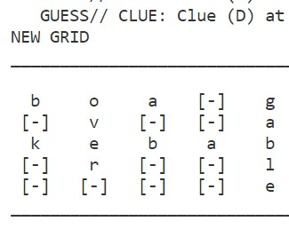

Avik Bosshardt - avikbosshardt.com
Portfolio
Below is a curated selection of my favorite projects, large and small, which best demonstrate the depth and breadth of my knowledge.

Apples and Oranges
Apples and Oranges is a mobile app developed with a team
of
four
students over
the course of one semester using Ionic Framework (TypeScript, JavaScript, HTML5, CSS). It
was
designed for entertainment purposes, with the goal being to settle disputes or make
decisions in
a
lighthearted way. Enter any two words, and it queries Datamuse API to gather information
about
the
words, select a winner between the two, and present that winner in an apparently-intelligent
way.
View on GitHub

Turtlebot Navigation
In the summer of 2019, I worked in Macalester's AI and
robotics
lab with two other students and a faculty mentor. Our primary task was to design, train, and
integrate a convolutional neural network into an existing robot navigation system using
Python,
TensorFlow, and OpenCV. Over the course of 10 weeks, we achieved our goal of significant
improvements in performance and accuracy. The lab's GitHub is linked below. My contributions
are
primarily in the main codebase catkin_ws, and compass_recorder, an Android app developed to
streamline the training data collection process.
View on GitHub
Read the Poster

Crossword Solver
Crossword Solver is my senior capstone project. A
collaboration
with two other students, it was developed in Python over the course of a semester. Crossword
Solver
gathers information from Google search and Datamuse API (see also: my Apples and Oranges
project).
It takes this information and makes use of an informed depth-first search as well as other
techniques from the field of AI to solve a given crossword puzzle.
View on GitHub

Drone Computer Vision
A side project in the summer 2019 Macalester AI and
Robotics
lab,
we developed a keyboard control scheme for our Parrot Bebop drone using Python. We also
experimented
with various computer vision object tracking techniques including face tracking, color
tracking,
and
QR code reading to achieve autonomous flying.
View on GitHub

Minimum Spanning Sidewalks
This is a project developed in Java with a team of three
students.
It is an implementation of two well-known algorithms for finding the minimum spanning tree
of a
graph: Prim's algorithm and Kruskal's Algorithm. We demonstrated applications of these
algorithms by
applying them to the sidewalks in Macalester College. Knowing the minimum spanning tree of
the
sidewalks could, for example, allow workers to plow the sidewalks in an efficient way so
that
all
the campus's buildings are quickly accessible after a snowstorm.
View on GitHub

L-System Viewer
L-System Viewer is a project created as part of a Theory
of
Computation course. Written in Java in a team of two students over the course of two weeks,
it
employs turtle graphics to turn a text description of a Lindenmayer system into a fractal
representation.
View on GitHub
MetroTransit Analysis
Our final project in Intro to Data Science was a
collaboration
with Twin Cities MetroTransit. A group of three students used data provided by MetroTransit
to
explore relationships between demographics and transit ridership. The analysis was conducted
in
R,
using a variety of packages including dplyr, tidyverse, and leaflet, among others.
Read our Analysis

Todo List
Todo List is a simple todo list program created
independently
in
Java for the primary purpose of gaining familiarity with JavaFX and serialization. It allows
you
to
add and remove items to the list which consist of a title, description, and date. The items
on
the
list persist across sessions.
View on GitHub